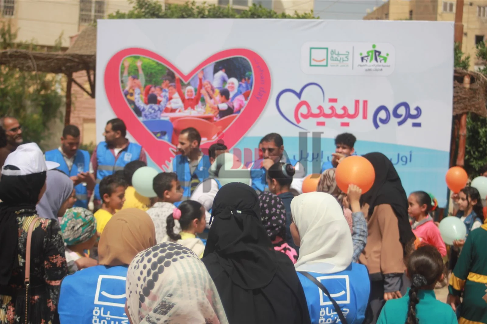

الأيتام و الأطفال
يأتي ملف الأيتام على رأس أولويات مبادرة حياة كريمة التي أطلقها الرئيس عبدالفتاح السيسي، للاهتمام بالفئات المستحقة الأولى بالرعاية، من أجل التخفيف عن كاهل المواطن في ربوع مصر كافة، بجميع الملفات والقطاعات، بداية من مشروعات البنية التحتية ووصولا إلى القوافل الغذائية والطبية، والمساعدات التي تطلقها مؤسسة حياة كريمة للتغلب على الظروف الاقتصادية.
شهادت من بنك ناصر للأيتام
وأضافت منسق حياة كريمة خلال حديثها لـ«الوطن» أن المبادرة تسعى لفتح حسابات استثمارية بأسماء الأطفال الأيتام الأيتام، ضمن المشروع القومي للادخار الاجتماعي «أولادنا مستقبلنا»، وفقا للكشوف المرسلة من المؤسسة، موضحة أن هناك عدد من الضوابط والمعايير، إذ يشترط لفتح الحساب أن يكون الطفل أقل من 16 عاما، على أن يكون له حرية التصرف بالحساب عند بلوغ السن القانوني ليبدأ حياته بها، ومن المقرر أن تكون تلك الحسابات بالتعاون مع بنك ناصر.
وتابعت أن تلك الشهادات تأتي في إطار توفير حياة طبيعية تساعد على تنشئة الأيتام تنشئة صحيحة، لخلق جيل جديد مهيأ ليكون عنصرا فاعلاً وتلمس حاجاتهم والأخذ بأيديهم من خلال فتح حسابات استثمارية كهبة مشروطة تحت مسمى منظومة «أولادنا مستقبلنا».

Home Page